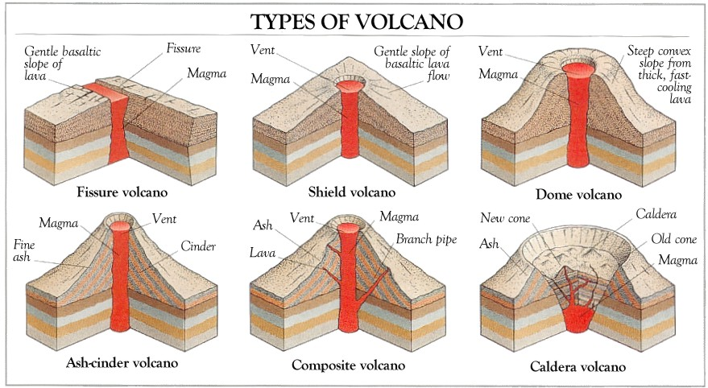

Volcanoes are formed when molten rock is heated and pushed up to the crust. No one is sure why magma rises in certain areas but when it does it forms pockets which create pressure on the rock of the Earth's crust. Once enough pressure is built up inside these pockets, magma forces itself through the crust of the surface and spills out lava.
Different Types of Volcanoes
There are 4 major types of Volcanoes. There is the Cinder Cone, Composite, Shield, and Lava Dome Volcanoes. The Cinder Cone Volcanoes occur when particles and blobs of lava are ejected from a volcanic vent. Over time, this builds up a circular or oval-shaped cone, with a bowl-shaped crater at the top. Composite volcanoes built up by many layers of hardened lava,pumice, and volcanic ash. Shield Volcanoes are large, broad volcanoes that look like shields from above. And Lava Domes are created by small masses of lava which are too viscous (thick) to flow far.